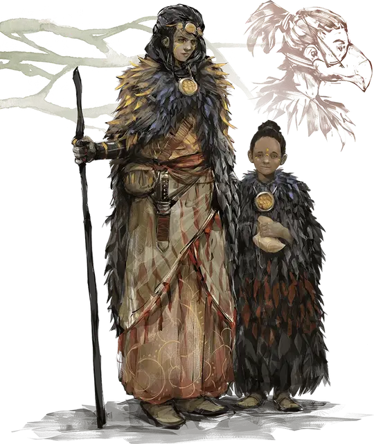

Мваксанаре
Mwaxanare
Средний Гуманоид (Человек), законно-нейтральный, именной НИП

Класс Доспеха 10
Хиты 13 (3к8)
Скорость 30 футов
| мод | спас | ||
|---|---|---|---|
| СИЛ | 6 | −2 | −2 |
| ЛОВ | 10 | +0 | +0 |
| ТЕЛ | 11 | +0 | +0 |
| мод | спас | ||
|---|---|---|---|
| ИНТ | 13 | +1 | +1 |
| МДР | 12 | +1 | +1 |
| ХАР | 16 | +3 | +3 |
Навыки Обман +5, Природа +3, Религия +3, Убеждение +5
Чувства пассивное Восприятие 11
Языки Общий, Ауран, Телепатия 30 фт.
Опасность 1/8 (25 опыта)
Бонус мастерства +2
Особенности
Использование заклинаний. Мваксанаре является заклинателем 2-го уровня. Её базовой характеристикой является Харизма (Сл спасброска от заклинаний 13, +5 к атакам заклинаниями). Она восстанавливает потраченные ячейки заклинаний после короткого или продолжительного отдыха. Она знает следующие заклинания колдуна:
• Заговоры (неограниченно): мистический заряд [eldritch blast], волшебная рука [mage hand];
• 1 уровень (2 ячейки): очарование личности [charm person], защита от зла и добра [protection from evil and good], невидимый слуга [unseen servant].
Персонализация Мваксанаре.
Идеал. «Однажды, я буду управлять Чультом как королева».
Привязанность. «Я заключила договор с Герцогами Ветра Аакуа и буду использовать их силу для защиты моего брата и ааракокр, которые оберегают нас».
Слабость. «Я принцесса и ко мне нужно обращаться с должным уважением. Я не выполняю приказы; я их раздаю».
Действия
Кинжал. . Рукопашная или дальнобойная атака оружием: +2 к попаданию, досягаемость 5 фт или дистанция 20/60 фт., одна цель. Попадание: 2 (1к4) колющего урона.
Описание
В нежном семнадцатилетнем возрасте принцесса Мваксанаре (сокращённо «Наре») является самым старым живым потомком королевских семей Ому и истинным наследником их падшего королевства. Она и её шестилетний брат На – гости ааракокр в Кир Сабале. Ааракокры стремится защитить молодых королевских особ до тех пор, пока зло в Ому не будет побеждено.
Мваксанаре всеми силами желает заполучить своё. Она жаждет вернуть свой трон и будет охотно использовать авантюристов, чтобы это произошло. Её тон почти всегда снисходителен, и она не потерпит дерзкого отношения.
После заключения договора с Герцогами Ветра Аакуа, древними существами Внешних Планов, принцесса стала неистовым колдуном. Из-за её ненависти к физическому труду она частенько использует волшебную руку [mage hand] и невидимого слугу [unseen servant]. Через свой договор она также получила телепатию.
Молодой принц На – это небоевой персонаж с КД 10 и 3 хитами. Живя среди ааракокр большую часть своей жизни, На считает себя одним из них. Он одевается как ааракокра и предпочитает говорить на Ауран, а не на Общем.